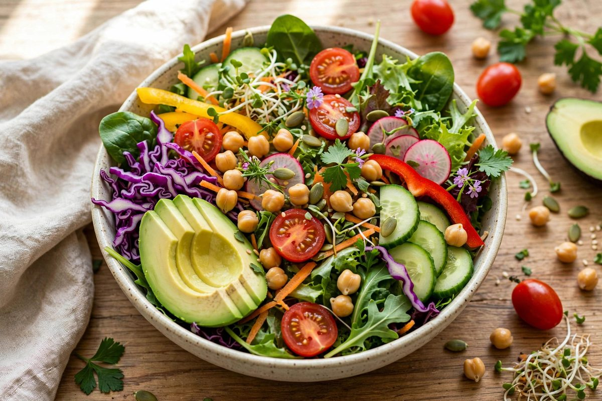

Home » Guides
Vegan Salads

A vegan salad can be a light side or a full meal — the difference is what you put in it. With grains, legumes, nuts, and a good dressing, a salad is filling, colourful, and satisfying. This guide shows you how to build salads that work as meals, the dressings that make them delicious, and the combinations that never fail.
Building a salad that fills you up
A meal salad needs four parts: greens, a protein, a grain or starchy vegetable, and a dressing. Start with a base of lettuce, spinach, kale, or cabbage. Add a protein such as chickpeas, lentils, tofu, or tempeh. Add a grain like quinoa or couscous, or a starchy vegetable like sweet potato or beetroot. Finish with something crunchy — nuts, seeds, or croutons — and something sweet, like grated carrot or sliced apple. This formula gives you a balanced, filling plate every time, and it works with whatever is in the fridge.
Grain and bean salads
Grain salads are the most reliable meal salads because they keep well and travel easily. Tabbouleh, made with bulgur, parsley, tomato, and lemon, is a classic. A quinoa salad with black beans, sweetcorn, and lime is filling and colourful. A chickpea salad with cucumber, tomato, and red onion is quick and refreshing. A lentil salad with roasted vegetables and a mustard dressing is hearty enough for dinner. Make a large batch and keep it in the fridge for three days, so lunch is always ready.
Dressings that make the difference
A good dressing turns a pile of vegetables into a meal. The basic vinaigrette is three parts olive oil to one part vinegar or lemon juice, with mustard, salt, and pepper. Tahini dressing, made from tahini, lemon, garlic, and water, is creamy and rich in calcium. Peanut dressing, with peanut butter, soy sauce, lime, and a little maple syrup, suits Asian-style salads. A creamy cashew dressing, blended from soaked cashews, lemon, and garlic, works on any salad. Make dressings in a jar and keep them in the fridge for a week.
Salads for every season
In summer, use tomatoes, cucumber, and sweetcorn with light dressings. In autumn, try roasted squash, kale, and walnuts with a warm dressing. In winter, use cabbage, carrots, and beetroot, which are sturdy and cheap, with a hearty grain. In spring, add asparagus, peas, and fresh herbs. Seasonal salads taste better and cost less, and they keep your meals varied through the year. A salad does not have to be cold — warm salads with roasted vegetables and grains are just as good, especially in cold weather.
Salad dressings to keep in the fridge
Keep two or three dressings ready in the fridge, and salads become effortless. A basic vinaigrette — olive oil, vinegar, mustard, and herbs — lasts two weeks in a jar. Tahini dressing, made from tahini, lemon, garlic, and water, lasts a week and goes with almost everything. Peanut dressing lasts a week and suits noodle and grain salads. Make dressings in small jam jars, label them with the date, and shake well before using. A good dressing is the difference between a salad you enjoy and a salad you force yourself to eat, so it is worth the five minutes it takes to make a fresh batch each week.
Frequently Asked Questions
How do I stop salads from being boring?
Add variety in texture and flavour: something crunchy, something creamy, something sweet, and something salty. A good dressing is essential.
Can a salad be a complete meal?
Yes, if it includes a protein source such as beans, tofu, or lentils, and a grain or starchy vegetable. A bowl of lettuce alone is a side dish, not a meal.
How do I keep salads fresh for lunch?
Store dressing separately and add it just before eating. Use sturdy greens like kale or cabbage, which hold up better than lettuce.